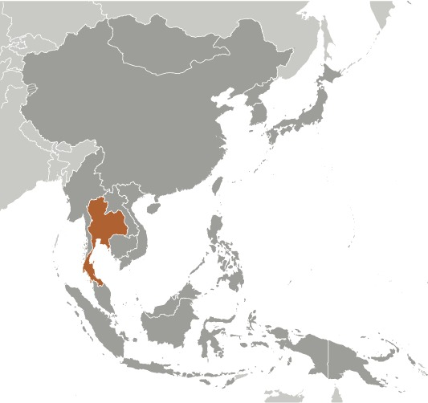
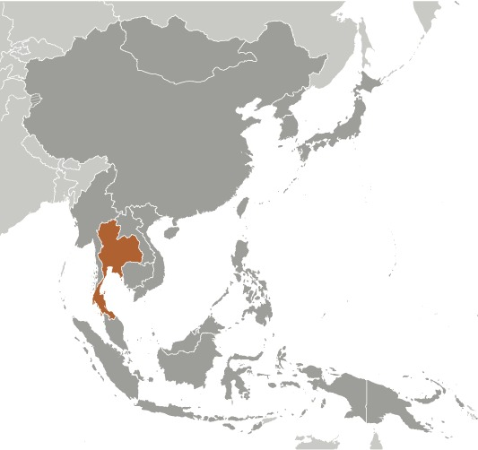

-
Introduction :: Thailand
-
Background:
A unified Thai kingdom was established in the mid-14th century. Known as Siam until 1939, Thailand is the only Southeast Asian country never to have been colonized by a European power. A bloodless revolution in 1932 led to the establishment of a constitutional monarchy. After the Japanese invaded Thailand in 1941, the government split into a pro-Japan faction and a pro-Ally faction backed by the King. Following the war, Thailand became a US treaty ally in 1954 after sending troops to Korea and later fighting alongside the US in Vietnam. Thailand since 2005 has experienced several rounds of political turmoil including a military coup in 2006 that ousted then Prime Minister THAKSIN Chinnawat, followed by large-scale street protests by competing political factions in 2008, 2009, and 2010. THAKSIN's youngest sister, YINGLAK Chinnawat, in 2011 led the Puea Thai Party to an electoral win and assumed control of the government.
In early May 2014, after months of large-scale anti-government protests in Bangkok beginning in November 2013, YINGLAK was removed from office by the Constitutional Court and in late May 2014 the Royal Thai Army, led by Royal Thai Army Gen. PRAYUT Chan-ocha, staged a coup against the caretaker government. PRAYUT was appointed prime minister in August 2014. PRAYUT also serves as the head of the National Council for Peace and Order (NCPO), a military-affiliated body that oversees the interim government. This body created several interim institutions to promote reform and draft a new constitution, which was passed in a national referendum in August 2016. In late 2017, PRAYUT announced elections would be held by November 2018; he has subsequently suggested they might occur in February 2019. As of mid-December 2018, a previoulsy held ban on campaigning and political activity has been lifted and per parliamentary laws, an election must be held within 150 days. King PHUMIPHON Adunyadet passed away in October 2016 after 70 years on the throne; his only son, WACHIRALONGKON Bodinthrathepphayawarangkun, ascended the throne in December 2016. He signed the new constitution in April 2017. Thailand has also experienced violence associated with the ethno-nationalist insurgency in its southern Malay-Muslim majority provinces. Since January 2004, thousands have been killed and wounded in the insurgency.
-
Geography :: Thailand
-
Location:Southeastern Asia, bordering the Andaman Sea and the Gulf of Thailand, southeast of BurmaGeographic coordinates:15 00 N, 100 00 EMap references:Southeast AsiaArea:total: 513,120 sq kmland: 510,890 sq kmwater: 2,230 sq kmcountry comparison to the world: 52Area - comparative:about three times the size of Florida; slightly more than twice the size of WyomingArea comparison map:
 The World Factbook Field Image ModalEast Asia/Southeast Asia :: Thailand Print
The World Factbook Field Image ModalEast Asia/Southeast Asia :: Thailand Print Image Description
Image Descriptionabout three times the size of Florida; slightly more than twice the size of Wyoming
Land boundaries:total: 5,673 kmborder countries (4): Burma 2416 km, Cambodia 817 km, Laos 1845 km, Malaysia 595 kmCoastline:3,219 kmMaritime claims:territorial sea: 12 nmexclusive economic zone: 200 nmcontinental shelf: 200-m depth or to the depth of exploitationClimate:tropical; rainy, warm, cloudy southwest monsoon (mid-May to September); dry, cool northeast monsoon (November to mid-March); southern isthmus always hot and humidTerrain:central plain; Khorat Plateau in the east; mountains elsewhereElevation:mean elevation: 287 mlowest point: Gulf of Thailand 0 mhighest point: Doi Inthanon 2,565 mNatural resources:tin, rubber, natural gas, tungsten, tantalum, timber, lead, fish, gypsum, lignite, fluorite, arable landLand use:agricultural land: 41.2% (2011 est.)arable land: 30.8% (2011 est.) / permanent crops: 8.8% (2011 est.) / permanent pasture: 1.6% (2011 est.)forest: 37.2% (2011 est.)other: 21.6% (2011 est.)Irrigated land:64,150 sq km (2012)Population distribution:highest population density is found in and around Bangkok; significant population clusters found througout large parts of the country, particularly north and northeast of Bangkok and in the extreme southern region of the countryNatural hazards:land subsidence in Bangkok area resulting from the depletion of the water table; droughtsEnvironment - current issues:air pollution from vehicle emissions; water pollution from organic and factory wastes; water scarcity; deforestation; soil erosion; wildlife populations threatened by illegal hunting; hazardous waste disposalEnvironment - international agreements:party to: Biodiversity, Climate Change, Climate Change-Kyoto Protocol, Desertification, Endangered Species, Hazardous Wastes, Marine Life Conservation, Ozone Layer Protection, Tropical Timber 83, Tropical Timber 94, Wetlandssigned, but not ratified: Law of the SeaGeography - note:controls only land route from Asia to Malaysia and Singapore; ideas for the construction of a canal across the Kra Isthmus that would create a bypass to the Strait of Malacca and shorten shipping times around Asia continue to be discussed -
People and Society :: Thailand
-
Population:68,977,400 (July 2020 est.)country comparison to the world: 20Nationality:noun: Thai (singular and plural)adjective: ThaiEthnic groups:Thai 97.5%, Burmese 1.3%, other 1.1%, unspecified <.1% (2015 est.)note: data represent population by nationalityLanguages:Thai (official) only 90.7%, Thai and other languages 6.4%, only other languages 2.9% (includes Malay, Burmese) (2010 est.)
note: data represent population by language(s) spoken at home; English is a secondary language of the elite
Religions:Buddhist 94.6%, Muslim 4.3%, Christian 1%, other (2015 est.)Age structure:0-14 years: 16.45% (male 5,812,803/female 5,533,772)15-24 years: 13.02% (male 4,581,622/female 4,400,997)25-54 years: 45.69% (male 15,643,583/female 15,875,353)55-64 years: 13.01% (male 4,200,077/female 4,774,801)65 years and over: 11.82% (male 3,553,273/female 4,601,119) (2020 est.)population pyramid: The World Factbook Field Image ModalEast Asia/Southeast Asia :: Thailand Print
The World Factbook Field Image ModalEast Asia/Southeast Asia :: Thailand Print Image DescriptionThis is the population pyramid for Thailand. A population pyramid illustrates the age and sex structure of a country's population and may provide insights about political and social stability, as well as economic development. The population is distributed along the horizontal axis, with males shown on the left and females on the right. The male and female populations are broken down into 5-year age groups represented as horizontal bars along the vertical axis, with the youngest age groups at the bottom and the oldest at the top. The shape of the population pyramid gradually evolves over time based on fertility, mortality, and international migration trends.
Image DescriptionThis is the population pyramid for Thailand. A population pyramid illustrates the age and sex structure of a country's population and may provide insights about political and social stability, as well as economic development. The population is distributed along the horizontal axis, with males shown on the left and females on the right. The male and female populations are broken down into 5-year age groups represented as horizontal bars along the vertical axis, with the youngest age groups at the bottom and the oldest at the top. The shape of the population pyramid gradually evolves over time based on fertility, mortality, and international migration trends.
For additional information, please see the entry for Population pyramid on the Definitions and Notes page under the References tab.Dependency ratios:total dependency ratio: 41.9youth dependency ratio: 23.5elderly dependency ratio: 18.4potential support ratio: 5.4 (2020 est.)Median age:total: 39 yearsmale: 37.8 yearsfemale: 40.1 years (2020 est.)country comparison to the world: 59Population growth rate:0.25% (2020 est.)country comparison to the world: 176Birth rate:10.7 births/1,000 population (2020 est.)country comparison to the world: 184Death rate:8.3 deaths/1,000 population (2020 est.)country comparison to the world: 82Net migration rate:0 migrant(s)/1,000 population (2020 est.)country comparison to the world: 95Population distribution:highest population density is found in and around Bangkok; significant population clusters found througout large parts of the country, particularly north and northeast of Bangkok and in the extreme southern region of the countryUrbanization:urban population: 51.4% of total population (2020)rate of urbanization: 1.73% annual rate of change (2015-20 est.)total population growth rate v. urban population growth rate, 2000-2030: PDFMajor urban areas - population:10.539 million BANGKOK (capital), 1.399 Chon Buri, 1.307 million Samut Prakan, 1.167 million Chiang Mai, 967,000 Songkla, 963,000 Nothaburi (2020)Sex ratio:at birth: 1.05 male(s)/female0-14 years: 1.05 male(s)/female15-24 years: 1.04 male(s)/female25-54 years: 0.99 male(s)/female55-64 years: 0.88 male(s)/female65 years and over: 0.77 male(s)/femaletotal population: 0.96 male(s)/female (2020 est.)Mother's mean age at first birth:23.3 years (2009 est.)Maternal mortality rate:37 deaths/100,000 live births (2017 est.)country comparison to the world: 103Infant mortality rate:total: 8.6 deaths/1,000 live birthsmale: 9.5 deaths/1,000 live birthsfemale: 7.6 deaths/1,000 live births (2020 est.)country comparison to the world: 145Life expectancy at birth:total population: 75.6 yearsmale: 72.4 yearsfemale: 78.9 years (2020 est.)country comparison to the world: 113Total fertility rate:1.54 children born/woman (2020 est.)country comparison to the world: 195Contraceptive prevalence rate:78.4% (2015/16)Drinking water source:improved: urban: 100% of populationrural: 100% of populationtotal: 100% of populationunimproved: urban: 0% of populationrural: 0% of populationtotal: 0% of population (2017 est.)Current Health Expenditure:3.7% (2017)Physicians density:0.81 physicians/1,000 population (2017)Hospital bed density:2.1 beds/1,000 population (2010)Sanitation facility access:improved: urban: 100% of populationrural: 100% of populationtotal: 99.9% of populationunimproved: urban: 0% of populationrural: 0% of populationtotal: 0.1% of population (2017 est.)HIV/AIDS - adult prevalence rate:0.8% (2019 est.)country comparison to the world: 54HIV/AIDS - people living with HIV/AIDS:480,000 (2018 est.)country comparison to the world: 17HIV/AIDS - deaths:14,000 (2019 est.)country comparison to the world: 15Major infectious diseases:degree of risk: very high (2020)food or waterborne diseases: bacterial diarrheavectorborne diseases: dengue fever, Japanese encephalitis, and malariaObesity - adult prevalence rate:10% (2016)country comparison to the world: 140Children under the age of 5 years underweight:6.7% (2016)country comparison to the world: 74Education expenditures:4.1% of GDP (2013)country comparison to the world: 95Literacy:definition: age 15 and over can read and writetotal population: 92.9%male: 94.7%female: 91.2% (2015)School life expectancy (primary to tertiary education):total: 15 yearsmale: 15 yearsfemale: 16 years (2016)Unemployment, youth ages 15-24:total: 3.7%male: 3%female: 4.7% (2016 est.)country comparison to the world: 170 -
Government :: Thailand
-
Country name:conventional long form: Kingdom of Thailandconventional short form: Thailandlocal long form: Ratcha Anachak Thailocal short form: Prathet Thaiformer: Siametymology: Land of the Tai [People]"; the meaning of "tai" is uncertain, but may originally have meant "human beings," "people," or "free peopleGovernment type:constitutional monarchyCapital:name: Bangkokgeographic coordinates: 13 45 N, 100 31 Etime difference: UTC+7 (12 hours ahead of Washington, DC, during Standard Time)etymology: Bangkok was likely originally a colloquial name, but one that was widely adopted by foreign visitors; the name may derive from "bang ko," where "bang" is the Thai word for "village on a stream" and "ko" means "island," both referencing the area's landscape, which was carved by rivers and canals; alternatively, the name may come from "bang makok," where "makok" is the name of the Java plum, a plant bearing olive-like fruit; this possibility is supported by the former name of Wat Arun, a historic temple in the area, that used to be called Wat Makok;
Krung Thep, the city's Thai name, means "City of the Deity" and is a shortening of the full ceremonial name: Krungthepmahanakhon Amonrattanakosin Mahintharayutthaya Mahadilokphop Noppharatratchathaniburirom Udomratchaniwetmahasathan Amonphimanawatansathit Sakkathattiyawitsanukamprasit; translated the meaning is: City of angels, great city of immortals, magnificent city of the nine gems, seat of the king, city of royal palaces, home of gods incarnate, erected by Vishvakarman at Indra's behest; it holds the world's record as the longest place name (169 letters)Administrative divisions:76 provinces (changwat, singular and plural) and 1 municipality* (maha nakhon); Amnat Charoen, Ang Thong, Bueng Kan, Buri Ram, Chachoengsao, Chai Nat, Chaiyaphum, Chanthaburi, Chiang Mai, Chiang Rai, Chon Buri, Chumphon, Kalasin, Kamphaeng Phet, Kanchanaburi, Khon Kaen, Krabi, Krung Thep* (Bangkok), Lampang, Lamphun, Loei, Lop Buri, Mae Hong Son, Maha Sarakham, Mukdahan, Nakhon Nayok, Nakhon Pathom, Nakhon Phanom, Nakhon Ratchasima, Nakhon Sawan, Nakhon Si Thammarat, Nan, Narathiwat, Nong Bua Lamphu, Nong Khai, Nonthaburi, Pathum Thani, Pattani, Phangnga, Phatthalung, Phayao, Phetchabun, Phetchaburi, Phichit, Phitsanulok, Phra Nakhon Si Ayutthaya, Phrae, Phuket, Prachin Buri, Prachuap Khiri Khan, Ranong, Ratchaburi, Rayong, Roi Et, Sa Kaeo, Sakon Nakhon, Samut Prakan, Samut Sakhon, Samut Songkhram, Saraburi, Satun, Sing Buri, Si Sa Ket, Songkhla, Sukhothai, Suphan Buri, Surat Thani, Surin, Tak, Trang, Trat, Ubon Ratchathani, Udon Thani, Uthai Thani, Uttaradit, Yala, YasothonIndependence:1238 (traditional founding date; never colonized)National holiday:Birthday of King WACHIRALONGKON, 28 July (1952)Constitution:history: many previous; latest drafted and presented 29 March 2016, approved by referendum 7 August 2016, signed into law by the king 6 April 2017amendments: proposed as a joint resolution by the Council of Ministers and the National Council for Peace and Order (the junta that has ruled Thailand since the 2014 coup) and submitted as a draft to the National Legislative Assembly; passage requires majority vote of the existing Assembly members and presentation to the monarch for assent and countersignature of the prime ministerLegal system:civil law system with common law influencesInternational law organization participation:has not submitted an ICJ jurisdiction declaration; non-party state to the ICCtCitizenship:citizenship by birth: nocitizenship by descent only: at least one parent must be a citizen of Thailanddual citizenship recognized: noresidency requirement for naturalization: 5 yearsSuffrage:18 years of age; universal and compulsoryExecutive branch:chief of state: King WACHIRALONGKON, also spelled Vajiralongkorn, (since 1 December 2016); note - King PHUMIPHON Adunyadet, also spelled BHUMIBOL Adulyadej (since 9 June 1946) died 13 October 2016head of government: Prime Minister PRAYUT Chan-ocha (since 25 August 2014); Deputy Prime Ministers PRAWIT Wongsuwan (since 31 August 2014), WITSANU Kruea-ngam (since 31 August 2014), SUPHATTHANAPHONG Phanmichao (since August 2020), CHURIN Laksanawisit (since November 2019), ANUTHIN Chanwirakun (since November 2019), DON Pramudwinai (since August 2020)cabinet: Council of Ministers nominated by the prime minister, appointed by the king; a Privy Council advises the kingelections/appointments: the monarchy is hereditary; the House of Representatives and Senate approves a person for Prime Minister who must then be appointed by the King (as stated in the transitory provision of the 2017 constitution); the office of prime minister can be held for up to a total of 8 yearsnote: PRAYUT Chan-ocha was appointed interim prime minister in August 2014, three months after he staged the coup that removed the previously elected government of Prime Minister YINGLAK Chinnawat; on 5 June 2019 PRAYUT (independent) was approved as prime minister by the parliament - 498 votes to 244 for THANATHON Chuengrungrueangkit (FFP)
Legislative branch:description: bicameral National Assembly or Rathhasapha consists of:
Senate or Wuthissapha (250 seats; members appointed by the Royal Thai Army to serve 5-year terms)
House of Representatives or Saphaphuthan Ratsadon (500 seats; 375 members directly elected in single-seat constituencies by simple majority vote and 150 members elected in a single nationwide constituency by party-list proportional representation vote; members serve 4-year terms)elections: Senate - last held on 14 May 2019 (next to be held in 2024)
House of Representatives - last held on 24 March 2019 (next to be held in 2023)election results: Senate - percent of vote by party - NA; seats by party - NA; composition - men 224, women 26, percent of women 10.4%
House of Representatives - percent of vote by party - PPRP 23.7%, PTP 22.2%, FFP 17.8%, DP 11.1%, PJT 10.5%, TLP 2.3%, CTP 2.2%, NEP 1.4%, PCC 1.4%, ACT 1.2%, PCP 1.2%, other 5.1%; seats by party - PTP 136, PPRP 116, FFP 81, DP 53, PJT 51, CTP 10, TLP 10, PCC 7, PCP 5, NEP 6, ACT 5, other 20; composition - men 421, women 79, percent of women 15.8%; note - total National Assembly percent of women 14%Judicial branch:highest courts: Supreme Court of Justice (consists of the court president, 6 vice presidents, 60-70 judges, and organized into 10 divisions); Constitutional Court (consists of the court president and 8 judges); Supreme Administrative Court (number of judges determined by Judicial Commission of the Administrative Courts)judge selection and term of office: Supreme Court judges selected by the Judicial Commission of the Courts of Justice and approved by the monarch; judge term determined by the monarch; Constitutional Court justices - 3 judges drawn from the Supreme Court, 2 judges drawn from the Administrative Court, and 4 judge candidates selected by the Selective Committee for Judges of the Constitutional Court, and confirmed by the Senate; judges appointed by the monarch serve single 9-year terms; Supreme Administrative Court judges selected by the Judicial Commission of the Administrative Courts and appointed by the monarch; judges serve for lifesubordinate courts: courts of first instance and appeals courts within both the judicial and administrative systems; military courtsPolitical parties and leaders:Action Coalition of Thailand Party or ACT [TAWEESAK Na Takuathung (acting); CHATUMONGKHON Sonakun resigned June 2020]
Anakhot Mai Party (Future Forward Party) or FFP [THANATHON Chuengrungrueangkit] (dissolved, February 2020)
Chat Phatthana Party (National Development Party) [THEWAN Liptaphanlop]
Chat Thai Phatthana Party (Thai Nation Development Party) or CTP [KANCHANA Sinlapa-acha]
New Economics Party or NEP [MINGKHWAN Sangsuwan]
Phalang Pracharat Party or PPP [UTTAMA Sawanayon]
Phumchai Thai Party (Thai Pride Party) or PJT [ANUTHIN Chanwirakun]
Prachachat Party of PCC [WAN Muhamad NOOR Matha]
Prachathipat Party (Democrat Party) or DP [CHURIN Laksanawisit]
Puea Chat Party (For Nation Party) or PCP [SONGKHRAM Kitletpairot]
Puea Thai Party (For Thais Party) or PTP [WIROT Paoin]
Puea Tham Party (For Dharma Party) [NALINI Thawisin]
Seri Ruam Thai Party (Thai Liberal Party) or TLP [SERIPHISUT Temiyawet]
Thai Forest Conservation Party or TFCP [DAMRONG Phidet]
Thai Local Power Party or TLP [collective leadership]
Thai Raksa Chat Party (Thai National Preservation Party) [PRICHAPHON Phongpanit]note: as of 5 April 2018, 98 new parties applied to be registered with the Election Commission in accordance with the provisions of the new organic law on political parties
International organization participation:ADB, APEC, ARF, ASEAN, BIMSTEC, BIS, CD, CICA, CP, EAS, FAO, G-77, IAEA, IBRD, ICAO, ICC (national committees), ICRM, IDA, IFAD, IFC, IFRCS, IHO, ILO, IMF, IMO, IMSO, Interpol, IOC, IOM, IPU, ISO, ITSO, ITU, ITUC (NGOs), MIGA, NAM, OAS (observer), OIC (observer), OIF (observer), OPCW, OSCE (partner), PCA, PIF (partner), UN, UNAMID, UNCTAD, UNESCO, UNHCR, UNIDO, UNMOGIP, UNOCI, UNWTO, UPU, WCO, WFTU (NGOs), WHO, WIPO, WMO, WTODiplomatic representation in the US:chief of mission: Ambassador THANI Thongphakdi (since 6 January 2020)chancery: 1024 Wisconsin Avenue NW, Suite 401, Washington, DC 20007telephone: [1] (202) 944-3600FAX: [1] (202) 944-3611consulate(s) general: Chicago, Los Angeles, New YorkDiplomatic representation from the US:chief of mission: Ambassador (vacant); Charge d'Affaires Michael HEATH (since August 2019)telephone: [66] 2-205-4000embassy: 95 Wireless Road, Bangkok 10330mailing address: APO AP 96546FAX: [66] 2-205-4306consulate(s) general: Chiang MaiFlag description:five horizontal bands of red (top), white, blue (double width), white, and red; the red color symbolizes the nation and the blood of life, white represents religion and the purity of Buddhism, and blue stands for the monarchynote: similar to the flag of Costa Rica but with the blue and red colors reversed
National symbol(s):garuda (mythical half-man, half-bird figure), elephant; national colors: red, white, blueNational anthem:name: "Phleng Chat Thai" (National Anthem of Thailand)lyrics/music: Luang SARANUPRAPAN/Phra JENDURIYANGnote: music adopted 1932, lyrics adopted 1939; by law, people are required to stand for the national anthem at 0800 and 1800 every day; the anthem is played in schools, offices, theaters, and on television and radio during this time; "Phleng Sanlasoen Phra Barami" (A Salute to the Monarch) serves as the royal anthem and is played in the presence of the royal family and during certain state ceremonies
-
Economy :: Thailand
-
Economic overview:
With a relatively well-developed infrastructure, a free-enterprise economy, and generally pro-investment policies, Thailand is highly dependent on international trade, with exports accounting for about two thirds of GDP. Thailand’s exports include electronics, agricultural commodities, automobiles and parts, and processed foods. The industry and service sectors produce about 90% of GDP. The agricultural sector, comprised mostly of small-scale farms, contributes only 10% of GDP but employs about one third of the labor force. Thailand has attracted an estimated 3.0-4.5 million migrant workers, mostly from neighboring countries.
Over the last few decades, Thailand has reduced poverty substantially. In 2013, the Thai Government implemented a nationwide 300 baht (roughly $10) per day minimum wage policy and deployed new tax reforms designed to lower rates on middle-income earners.
Thailand’s economy is recovering from slow growth during the years since the 2014 coup. Thailand’s economic fundamentals are sound, with low inflation, low unemployment, and reasonable public and external debt levels. Tourism and government spending - mostly on infrastructure and short-term stimulus measures – have helped to boost the economy, and The Bank of Thailand has been supportive, with several interest rate reductions.
Over the longer-term, household debt levels, political uncertainty, and an aging population pose risks to growth.
GDP real growth rate:2.62% (2019 est.)4.31% (2018 est.)4.26% (2017 est.)country comparison to the world: 109Inflation rate (consumer prices):0.7% (2019 est.)1% (2018 est.)0.6% (2017 est.)country comparison to the world: 56Credit ratings:Fitch rating: BBB+ (2013)Moody's rating: Baa1 (2003)Standard & Poors rating: BBB+ (2004)GDP (purchasing power parity) - real:$1,199,819,000,000 (2019 est.)$1,169,267,000,000 (2018 est.)$1,121,049,000,000 (2017 est.)note: data are in 2010 dollars
GDP (official exchange rate):$543.798 billion (2019 est.)GDP - per capita (PPP):$6,623 (2019 est.)$6,472 (2018 est.)$6,225 (2017 est.)note: data are in 2010 dollars
country comparison to the world: 143Gross national saving:34.1% of GDP (2017 est.)32.8% of GDP (2016 est.)30.3% of GDP (2015 est.)country comparison to the world: 19GDP - composition, by sector of origin:agriculture: 8.2% (2017 est.)industry: 36.2% (2017 est.)services: 55.6% (2017 est.)GDP - composition, by end use:household consumption: 48.8% (2017 est.)government consumption: 16.4% (2017 est.)investment in fixed capital: 23.2% (2017 est.)investment in inventories: -0.4% (2017 est.)exports of goods and services: 68.2% (2017 est.)imports of goods and services: -54.6% (2017 est.)Ease of Doing Business Index scores:84.6 (2020)Agriculture - products:rice, cassava (manioc, tapioca), rubber, corn, sugarcane, coconuts, palm oil, pineapple, livestock, fish productsIndustries:tourism, textiles and garments, agricultural processing, beverages, tobacco, cement, light manufacturing such as jewelry and electric appliances, computers and parts, integrated circuits, furniture, plastics, automobiles and automotive parts, agricultural machinery, air conditioning and refrigeration, ceramics, aluminum, chemical, environmental management, glass, granite and marble, leather, machinery and metal work, petrochemical, petroleum refining, pharmaceuticals, printing, pulp and paper, rubber, sugar, rice, fishing, cassava, world's second-largest tungsten producer and third-largest tin producerIndustrial production growth rate:1.6% (2017 est.)country comparison to the world: 141Labor force:37.546 million (2020 est.)country comparison to the world: 15Labor force - by occupation:agriculture: 31.8%industry: 16.7%services: 51.5% (2015 est.)Unemployment rate:0.99% (2019 est.)1.06% (2018 est.)country comparison to the world: 7Population below poverty line:7.2% (2015 est.)Budget:revenues: 69.23 billion (2017 est.)expenditures: 85.12 billion (2017 est.)Taxes and other revenues:15.2% (of GDP) (2017 est.)country comparison to the world: 193Budget surplus (+) or deficit (-):-3.5% (of GDP) (2017 est.)country comparison to the world: 148Public debt:41.9% of GDP (2017 est.)41.8% of GDP (2016 est.)note: data cover general government debt and include debt instruments issued (or owned) by government entities other than the treasury; the data include treasury debt held by foreign entities; the data include debt issued by subnational entities, as well as intragovernmental debt; intragovernmental debt consists of treasury borrowings from surpluses in the social funds, such as for retirement, medical care, and unemployment; debt instruments for the social funds are sold at public auctions
country comparison to the world: 118Fiscal year:1 October - 30 SeptemberCurrent account balance:$37.033 billion (2019 est.)$28.423 billion (2018 est.)country comparison to the world: 11Exports:$291.169 billion (2019 est.)$298.968 billion (2018 est.)$289.239 billion (2017 est.)country comparison to the world: 27Exports - partners:China 12.4%, US 11.2%, Japan 9.5%, Hong Kong 5.2%, Vietnam 4.9%, Australia 4.5%, Malaysia 4.4% (2017)Exports - commodities:automobiles and parts, computer and parts, jewelry and precious stones, polymers of ethylene in primary forms, refine fuels, electronic integrated circuits, chemical products, rice, fish products, rubber products, sugar, cassava, poultry, machinery and parts, iron and steel and their productsImports:$257.873 billion (2019 est.)$269.455 billion (2018 est.)$248.698 billion (2017 est.)country comparison to the world: 28Imports - commodities:machinery and parts, crude oil, electrical machinery and parts, chemicals, iron & steel and product, electronic integrated circuit, automobile’s parts, jewelry including silver bars and gold, computers and parts, electrical household appliances, soybean, soybean meal, wheat, cotton, dairy productsImports - partners:China 20%, Japan 14.5%, US 6.8%, Malaysia 5.4% (2017)Reserves of foreign exchange and gold:$202.6 billion (31 December 2017 est.)$171.9 billion (31 December 2016 est.)country comparison to the world: 12Debt - external:$132 billion (31 December 2017 est.)$130.6 billion (31 December 2016 est.)country comparison to the world: 44Exchange rates:baht per US dollar -30.03 (2020 est.)30.29749 (2019 est.)32.8075 (2018 est.)34.248 (2014 est.)32.48 (2013 est.) -
Energy :: Thailand
-
Electricity access:electrification - total population: 100% (2020)Electricity - production:181.5 billion kWh (2016 est.)country comparison to the world: 23Electricity - consumption:187.7 billion kWh (2016 est.)country comparison to the world: 22Electricity - exports:2.267 billion kWh (2015 est.)country comparison to the world: 44Electricity - imports:19.83 billion kWh (2016 est.)country comparison to the world: 11Electricity - installed generating capacity:44.89 million kW (2016 est.)country comparison to the world: 24Electricity - from fossil fuels:76% of total installed capacity (2016 est.)country comparison to the world: 93Electricity - from nuclear fuels:0% of total installed capacity (2017 est.)country comparison to the world: 193Electricity - from hydroelectric plants:8% of total installed capacity (2017 est.)country comparison to the world: 124Electricity - from other renewable sources:16% of total installed capacity (2017 est.)country comparison to the world: 55Crude oil - production:228,000 bbl/day (2018 est.)country comparison to the world: 34Crude oil - exports:790 bbl/day (2015 est.)country comparison to the world: 76Crude oil - imports:875,400 bbl/day (2015 est.)country comparison to the world: 12Crude oil - proved reserves:349.4 million bbl (1 January 2018 est.)country comparison to the world: 50Refined petroleum products - production:1.328 million bbl/day (2015 est.)country comparison to the world: 14Refined petroleum products - consumption:1.326 million bbl/day (2016 est.)country comparison to the world: 16Refined petroleum products - exports:278,300 bbl/day (2015 est.)country comparison to the world: 29Refined petroleum products - imports:134,200 bbl/day (2015 est.)country comparison to the world: 44Natural gas - production:38.59 billion cu m (2017 est.)country comparison to the world: 22Natural gas - consumption:52.64 billion cu m (2017 est.)country comparison to the world: 16Natural gas - exports:0 cu m (2017 est.)country comparison to the world: 199Natural gas - imports:14.41 billion cu m (2017 est.)country comparison to the world: 21Natural gas - proved reserves:193.4 billion cu m (1 January 2018 est.)country comparison to the world: 43Carbon dioxide emissions from consumption of energy:355 million Mt (2017 est.)country comparison to the world: 19
-
Communications :: Thailand
-
Telephones - fixed lines:total subscriptions: 2,580,166subscriptions per 100 inhabitants: 3.75 (2019 est.)country comparison to the world: 50Telephones - mobile cellular:total subscriptions: 128,086,321subscriptions per 100 inhabitants: 186.16 (2019 est.)country comparison to the world: 13Telecommunication systems:general assessment: high quality system, especially in urban areas like Bangkok; mobile and mobile broadband penetration are on the increase; Fiber-to-the-home (FttH) has seen strong growth in the major cities; 4G TD-LTE available and moving to 5G services; seven smart cities with the hope of 100 smart cities within its borders in the next two decades; one of the biggest e-commerce markets in Southeast Asia; fixed broadband remains relative compared to other developed Asian telecom markets and with the dominance of the mobile platform (2020)domestic: fixed-line system provided by both a government-owned and commercial provider; wireless service expanding rapidly; fixed-line 4 per 100 and mobile-cellular 186 per 100 (2019)international: country code - 66; landing points for the AAE-1, FEA, SeaMeWe-3,-4, APG, SJC2, TIS, MCT and AAG submarine cable systems providing links throughout Asia, Australia, Africa, Middle East, Europe, and US; satellite earth stations - 2 Intelsat (1 Indian Ocean, 1 Pacific Ocean) (2019)note: the COVID-19 outbreak is negatively impacting telecommunications production and supply chains globally; consumer spending on telecom devices and services has also slowed due to the pandemic's effect on economies worldwide; overall progress towards improvements in all facets of the telecom industry - mobile, fixed-line, broadband, submarine cable and satellite - has moderatedBroadcast media:26 digital TV stations in Bangkok broadcast nationally, 6 terrestrial TV stations in Bangkok broadcast nationally via relay stations - 2 of the stations are owned by the military, the other 4 are government-owned or controlled, leased to private enterprise, and all are required to broadcast government-produced news programs twice a day; multi-channel satellite and cable TV subscription services are available; radio frequencies have been allotted for more than 500 government and commercial radio stations; many small community radio stations operate with low-power transmitters (2017)Internet country code:.thInternet users:total: 38,987,531percent of population: 56.82% (July 2018 est.)country comparison to the world: 21Broadband - fixed subscriptions:total: 9.189 millionsubscriptions per 100 inhabitants: 13 (2018 est.)country comparison to the world: 19
-
Transportation :: Thailand
-
National air transport system:number of registered air carriers: 15 (2020)inventory of registered aircraft operated by air carriers: 283annual passenger traffic on registered air carriers: 76,053,042 (2018)annual freight traffic on registered air carriers: 2,666,260,000 mt-km (2018)Civil aircraft registration country code prefix:HS (2016)Airports:101 (2013)country comparison to the world: 56Airports - with paved runways:total: 63 (2013)over 3,047 m: 8 (2013)2,438 to 3,047 m: 12 (2013)1,524 to 2,437 m: 23 (2013)914 to 1,523 m: 14 (2013)under 914 m: 6 (2013)Airports - with unpaved runways:total: 38 (2013)2,438 to 3,047 m: 1 (2013)1,524 to 2,437 m: 1 (2013)914 to 1,523 m: 10 (2013)under 914 m: 26 (2013)Heliports:7 (2013)Pipelines:2 km condensate, 5900 km gas, 85 km liquid petroleum gas, 1 km oil, 1097 km refined products (2013)Railways:total: 4,127 km (2017)standard gauge: 84 km 1.435-m gauge (84 km electrified) (2017)narrow gauge: 4,043 km 1.000-m gauge (2017)country comparison to the world: 47Roadways:total: 180,053 km (includes 450 km of expressways) (2006)country comparison to the world: 30Waterways:4,000 km (3,701 km navigable by boats with drafts up to 0.9 m) (2011)country comparison to the world: 26Merchant marine:total: 825by type: bulk carrier 27, container ship 27, general cargo 89, oil tanker 243, other 439 (2019)country comparison to the world: 27Ports and terminals:major seaport(s): Bangkok, Laem Chabang, Map Ta Phut, Prachuap Port, Si Rachacontainer port(s) (TEUs): Laem Chabang (7,227,431) (2017)LNG terminal(s) (import): Map Ta Phut
-
Military and Security :: Thailand
-
Military and security forces:Royal Thai Armed Forces (Kongthap Thai, RTARF): Royal Thai Army (Kongthap Bok Thai, RTA; includes Thai Rangers (Thahan Phrahan)), Royal Thai Navy (Kongthap Ruea Thai, RTN; includes Royal Thai Marine Corps), Royal Thai Air Force (Kongthap Akaat Thai, RTAF); Interior Ministry paramilitary forces: Volunteer Defense Corps (2019)note: the Thai Rangers (aka Thahan Phrahan or 'Hunter Soldiers’) is a paramilitary force formed in 1978 to clear Communist Party of Thailand guerrillas from mountain strongholds in the country's northeast; it is a light infantry force led by regular officers and non-commissioned officers and comprised of both full‐ and part‐time personnel; it conducts counterinsurgency operations in the southern, predominantly Muslim, region; on the eastern border with Laos and Cambodia, the Rangers have primary responsibility for border surveillance and protectionMilitary expenditures:1.3% of GDP (2019)1.4% of GDP (2018)1.6% of GDP (2017)1.6% of GDP (2016)1.4% of GDP (2015)country comparison to the world: 96Military and security service personnel strengths:estimates for the size of the Royal Thai Armed Forces (RTARF) vary; approximately 360,000 active duty personnel (245,000 Army; 70,000 Navy; 45,000 Air Force); est. 20,000 Thai Rangers (2019)Military equipment inventories and acquisitions:the RTARF has a diverse array of foreign-supplied weapons systems, including a large amount of obsolescent or second-hand US equipment; since 2015, the top suppliers are China, South Korea, Ukraine, and the US (2019 est.)Military deployments:270 South Sudan (UNMISS) (2020)Military service age and obligation:21 years of age for compulsory military service; 18 years of age for voluntary military service; males register at 18 years of age; 2-year conscript service obligation based on lottery (2018)Military - note:including the most recent in 2014, the military has conducted 12 successful coups and attempted an additional seven since the fall of absolute monarchy in 1932; since 2004, the military has fought against separatist insurgents in the southern provinces of Pattani, Yala, and Narathiwat, as well as parts of Songkhla; as of 2019, approximately 60,000 security forces, including large numbers of paramilitary troops such as the Thai Rangers, were stationed in the south (2019)
-
Transnational Issues :: Thailand
-
Disputes - international:
separatist violence in Thailand's predominantly Malay-Muslim southern provinces prompt border closures and controls with Malaysia to stem insurgent activities; Southeast Asian states have enhanced border surveillance to check the spread of avian flu; talks continue on completion of demarcation with Laos but disputes remain over several islands in the Mekong River; despite continuing border committee talks, Thailand must deal with Karen and other ethnic rebels, refugees, and illegal cross-border activities; Cambodia and Thailand dispute sections of boundary; in 2011, Thailand and Cambodia resorted to arms in the dispute over the location of the boundary on the precipice surmounted by Preah Vihear temple ruins, awarded to Cambodia by ICJ decision in 1962 and part of a planned UN World Heritage site; Thailand is studying the feasibility of jointly constructing the Hatgyi Dam on the Salween river near the border with Burma; in 2004, international environmentalist pressure prompted China to halt construction of 13 dams on the Salween River that flows through China, Burma, and Thailand; approximately 100,000 mostly Karen refugees fleeing civil strife, political upheaval and economic stagnation in Burma live in remote camps in Thailand near the border
Refugees and internally displaced persons:refugees (country of origin): 91,806 (Burma) (2020)stateless persons: 475,009 (2019) (estimate represents stateless persons registered with the Thai Government; actual number may be as high as 3.5 million); note - about half of Thailand's northern hill tribe people do not have citizenship and make up the bulk of Thailand's stateless population; most lack documentation showing they or one of their parents were born in Thailand; children born to Burmese refugees are not eligible for Burmese or Thai citizenship and are stateless; most Chao Lay, maritime nomadic peoples, who travel from island to island in the Andaman Sea west of Thailand are also stateless; stateless Rohingya refugees from Burma are considered illegal migrants by Thai authorities and are detained in inhumane conditions or expelled; stateless persons are denied access to voting, property, education, employment, healthcare, and drivingnote: Thai nationality was granted to more than 23,000 stateless persons between 2012 and 2016; in 2016, the Government of Thailand approved changes to its citizenship laws that could make 80,000 stateless persons eligible for citizenship, as part of its effort to achieve zero statelessness by 2024 (2018)
Trafficking in persons:current situation: Thailand is a source, transit, and destination country for men, women, and children subjected to forced labor and sex trafficking; victims from Burma, Cambodia, Laos, China, Vietnam, Uzbekistan, and India, migrate to Thailand in search of jobs but are forced, coerced, or defrauded into labor in commercial fishing, fishing-related industries, factories, domestic work, street begging, or the sex trade; some Thai, Burmese, Cambodian, and Indonesian men forced to work on fishing boats are kept at sea for years; sex trafficking of adults and children from Thailand, Laos, Vietnam, and Burma remains a significant problem; Thailand is a transit country for victims from China, Vietnam, Bangladesh, and Burma subjected to sex trafficking and forced labor in Malaysia, Indonesia, Singapore, Russia, South Korea, the US, and countries in Western Europe; Thai victims are also trafficked in North America, Europe, Africa, Asia, and the Middle Easttier rating: Tier 2 Watch List - Thailand does not fully comply with the minimum standards for the elimination of trafficking, and is not making significant efforts to do so; in 2014, authorities investigated, prosecuted, and convicted fewer traffickers and identified fewer victims; some cases of official complicity were investigated and prosecuted, but trafficking-related corruption continues to hinder progress in combatting trafficking; authorities’ efforts to screen for victims among vulnerable populations remained inadequate due to a poor understanding of trafficking indicators, a failure to recognize non-physical forms of coercion, and a shortage of language interpreters; the government passed new labor laws increasing the minimum age in the fishing industry to 18 years old, guaranteeing the minimum wage, and requiring work contracts, but weak law enforcement and poor coordination among regulatory agencies enabled exploitive labor practices to continue; the government increased efforts to raise public awareness to the dangers of human trafficking and to deny entry to foreign sex tourists (2015)Illicit drugs:a minor producer of opium, heroin, and marijuana; transit point for illicit heroin en route to the international drug market from Burma and Laos; eradication efforts have reduced the area of cannabis cultivation and shifted some production to neighboring countries; opium poppy cultivation has been reduced by eradication efforts; also a drug money-laundering center; minor role in methamphetamine production for regional consumption; major consumer of methamphetamine since the 1990s despite a series of government crackdowns
East Asia/Southeast Asia ::
Thailand